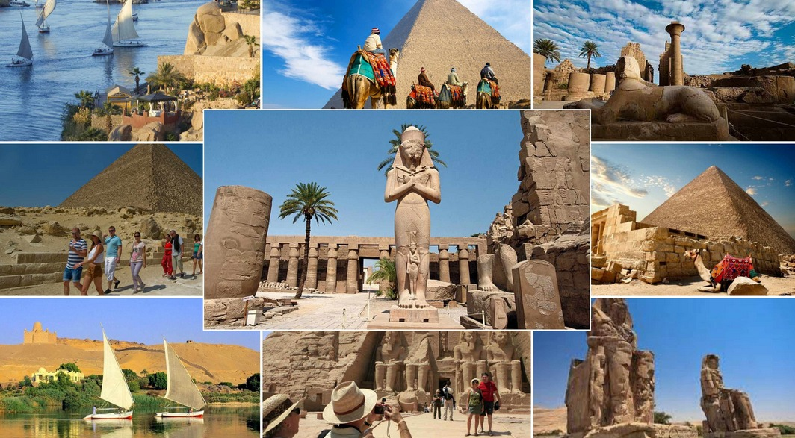

تعد السياحة في مِصر أحد أهم مصادر الدخل القومي بما توفره من عائدات دولارية سنوية، وعوائد العملة الأجنبية التي مكنتها من المشاركة بشكل كبير بالناتج الإجمالي المحلي، ومكافحة البطالة عن طريق توظيف شريحة واسعة من القوى العاملة في مصر.
وتعد مصر من أبرز الدول السياحية في العالم بما تستحوذ عليه من أعداد السائحين الوافدين في العالم، وتميزها بوفرة المزارات السياحية على اختلاف أنواعها، وانتشار المعابد والمتاحف والآثار والمباني التاريخية والفنية والحدائق الشاسعة على أرضها، وامتلاكها لبنية تحتية قوية تقوم على خدمة قطاع السياحة بما في ذلك الغرف الفندقية والقرى والمنتجعات السياحية وشركات السياحة ومكاتب الطيران.
وتمثل مناطق الأقصر، وأسوان، والقاهرة، والإسكندرية، والساحل الشمالي، والبحر الأحمر، وجنوب سيناء من أكثر المناطق جذباً للسياح بشكل عام.
ويعود تاريخ السياحة في مصر إلى المصريين القدماء، واستمرت كوجهة ومقصد سياحي مرغوب على مدار القرون الماضية وخلال التاريخ المعاصر.
واختارت منظمة اليونسكو ست مواقع تراثية ثقافية مصرية متنوعة ما بين مصرية قديمة وقبطية وإسلامية بالإضافة إلى موقع للتراث الطبيعي وذلك ضمن قائمة مواقع التراث العالمي.
السياحة في مصر عرفت طوال تاريخها بأنها مقصد للعديد من محبي السياحة، غير أن اكتشاف آثار الفراعنة منذ بدايات القرن الماضي قد اضاف سحراً خاصاً اليها بجانب ما بها من آثار دينية وحضارية فريدة، إضافة إلى ما تتمتع به من موقع جغرافي وسط العالم ومناخها المعتدل صيفاً وشتاءً، وسواحلها الجميلة الممتدة، وشواطئها المليئة بكنوز الشعب المرجانية النادرة.
وتعتمد السياحة في مصر على الآثار العديدة التي نتجت عن تنوع الحضارات واختلافها على مر العصور بها، من حضارات فرعونية وقبطية ورومانية وإسلامية، هذا غير أنها تطل على البحر الأحمر من جهة الشرق، والذي يضم المياه النقية، والكثير من انواع السمك وتعرج الشاطئ أدّى إلى ظهور العديد من الموانى الطبيعية، كما أن بها رياضات عديدة تجذب السياح الرياضيين، مثل الغوص ولعب الجولف وغيرها.
وتتميز مصر بوفرة المزارات السياحية على اختلاف أنواعها، وانتشار الجوامع والمعابد والمتاحف والآثار والمباني التاريخية والفنية والحدائق الشاسعة على أرضها، وامتلاكها بنية تحتية قوية تقوم على خدمة قطاع السياحة في مصر بما في ذلك الغرف الفندقية والمنتجعات السياحية ومكاتب الطيران.
وهي من المدن القديمة التي أنشئت وقت فتح المسلمون لمصر، ذكرها ياقوت الحموي في معجم البلدان فقال: الجيزة في لغة العرب معناها الوادى أي أفضل موضع فيه. تقع الجيزة في شمال مصر بين نهر النيل إلى الشرق والصحراء الغربية إلى الغرب، وهي من أكبر المدن المصرية من ناحية المساحة وعدد السكان. تعتبر محافظة الجيزة من المحافظات الهامة استراتيجياً حيث انها تربط الصعيد بالوجه البحري وتعتبر أيضاً المدخل الوحيد لمحافظة الفيوم وبها الطريق الصحراوي الخاص بمحافظة الإسكندرية، كما أنها محافظة عريقة جداً والحركة السياحية بها نشطة للغاية وذلك لوجود أفخر الفنادق والمحلات التي تبيع التذكارات للسياح بمختلف اجناسهم. وتعدّ أحد المدن التي تضم العديد من عوامل الجذب السياحية التي تجذب الزوار إليها من كافة أنحاء العالم، منها الآثار المصرية الشهيرة أي الأهرامات وأبو الهول والعديد من المتاحف. وبالإضافة إلى السياحة الأثرية هناك السياحة العلاجية والترفيهية والتاريخية.
و تقع محافظة الجيزة في الجزء الشمالي من وادي نهر النيل وتمتد من حدود محافظة بنى سويف جنوباً حتى حدود محافظة البحيرة شمالاً ويفصلها فرع رشيد عن محافظة المنوفية غرباً يحدها شرقاً محافظة القاهرة وتتميز محافظة الجيزة أيضاً بأنها إحدى محافظات القاهرة الكبرى وتقع على نهر النيل مباشرة.
محافظة الجيزة هي احدى محافظات مصر ، و عاصمتها مدينة الجيزة ، تنقسم المحافظة إدارياً إلى 9 مراكز ، 11 مدينة ، 7 أحياء ، 52 وحدة محلية قروية ، 170 قرية تابع، 637 كفر ونجع.
محافظة الجيزة واحدة من أهم مدن مصر وأقدمها من حيث النشأة، فقد اكتسبت مكانة مُتميّزة منذ القدم بسبب قُربها من النيل، فكانت عاصمة فرعونية في التاريخ السحيق ومعبرًا بين عواصم الدولة الإسلامية من خلال نهر النيل، ومقرًا لأول وأكبر جامعة مصرية.
تشتهر محافظة الجيزة بتعدد وتنوع معالمها السياحية، فإن كنت سائح مُحب للآثار والتاريخ والمناحي الثقافية فستجد أمامك الأهرامات المصرية التي ستندهش أنها أكثر من الثلاث أهرامات الشهيرة، متاحف التاريخ الفرعوني والإسلامي والقبطي والعصور الحديثة، ساقية الصاوي حيث حضور الأمسيات الثقافية والفنية. أما إن كنت مُحب للمناظر الطبيعية والطُرز المعمارية العجيبة فأمامك حديقة الأسماك، الجولات النيلية في قلب النيل، الواحات البحرية الشافية من أصعب الأمراض. أما إن كنت قد جئت في زيارة بصحبة العائلة والأطفال فسيجد أطفالك غايتهم في مدن الملاهي كماجيك لاند ودريم بارك، ادرينالين بارك، قرية فجنون، حديقة الحيوان، أما زوجتك فستجد ضالتها في مراكز التسوق التي تُقدم أشهر الماركات العالمية للسلع. ولا تنسيا أن تحظيا ببعض اللحظات الرومانسية بين روائح الزهور وروعة الأشجار التي تقدمها إليكما حديقة الأورمان.